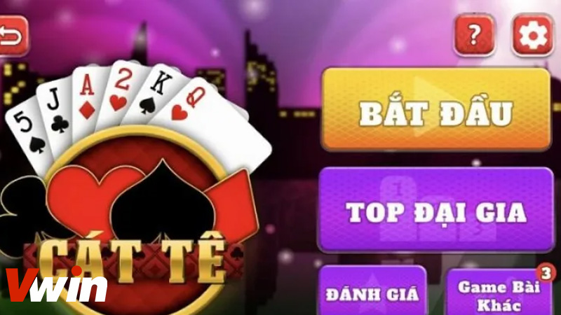

.png)
ĐÃ ĐĂNG TRÊN TRÊN THÁNG BA 1, 2024 BỞI Vwin
Cát tê không chỉ là một trò chơi bài giải trí mà còn là một trải nghiệm đầy hấp dẫn cho người chơi ở mọi độ tuổi. Tuy nhiên, để chiến thắng trong mỗi ván bài, không hề dễ dàng và đòi hỏi người chơi phải hiểu rõ về luật chơi cũng như các chiến thuật từ những cao thủ. Bạn đang muốn tìm hiểu về bài catte là gì và cách chơi bài này đúng theo luật? Hãy cùng Vwin khám phá những thông tin chi tiết trong bài viết dưới đây.
Trước hết, cần hiểu rõ về khái niệm bài Cát tê là gì? Bài Cát tê (Catte), còn được biết đến với các tên gọi khác như sắc tê, đã trở thành một trong những trò chơi bài phổ biến ở cả Việt Nam và nhiều quốc gia khác. Trò chơi này thu hút cả những người chơi mới, bởi cách chơi đơn giản và dễ hiểu. Tuy nhiên, để chiến thắng, người chơi cần phải áp dụng lý trí và giữ đầu óc tỉnh táo.
Khám phá về bài Cát tê là gì?
Xuất phát từ Ấn Độ, bài Cát tê đã trải qua quá trình phát triển và cải tiến đáng kể trước khi được giới thiệu vào Việt Nam. Trò chơi này sử dụng bộ bài tây tiêu chuẩn 52 lá, giống như hầu hết các trò chơi bài khác.
Tuy nhiên, điểm độc đáo của bài Catte là chỉ cần hai người để bắt đầu một trận đấu, mặc dù để trò chơi trở nên hấp dẫn và thú vị hơn, thường cần có từ 5 đến 6 người tham gia.
Trong trò chơi bài catte, có một số thuật ngữ thường được sử dụng mà bạn cần phải hiểu rõ:
Nắm vững luật chơi bài Cát tê
Để tham gia vào trò chơi bài Catte một cách thành thạo, việc hiểu rõ và tuân thủ luật chơi là vô cùng quan trọng. Dưới đây là một số quy định cơ bản của bài Cát tê là gì mà mọi người chơi nên biết:
Việc hiểu rõ các quy định này sẽ giúp bạn tận dụng tối đa cơ hội và tạo ra chiến lược chiến thắng trong trò chơi bài Catte.
Chi tiết các bước chơi bài Cát tê
Để hiểu rõ hơn về cách diễn ra một ván bài Cát tê là gì, hãy cùng chúng tôi điểm qua các bước quan trọng trong trò chơi này.
Trình tự ván bài Catte: Mỗi ván bài Catte được chia thành 6 vòng đấu, mỗi vòng tương ứng với việc phát 1 lá bài.
Trong 4 vòng đầu tiên:
Trong 2 vòng cuối cùng:
Mong rằng những thông tin được chia sẻ trong bài viết sẽ giúp bạn hiểu rõ hơn về bài Cát tê là gì và cách chơi theo đúng luật. Đừng ngần ngại học hỏi từ những bí kíp của các cao thủ đang tham gia trò chơi bài Catte trên các diễn đàn cá cược lớn để trao đổi kinh nghiệm. Đừng quên theo dõi Game bài Vwin để cập nhật những tin tức hữu ích!
Vwin được công nhận là nhà cái cá cược hợp pháp - an toàn. Vwin còn có trụ sở chính và cá cược trực tiếp tại Phú Quốc.